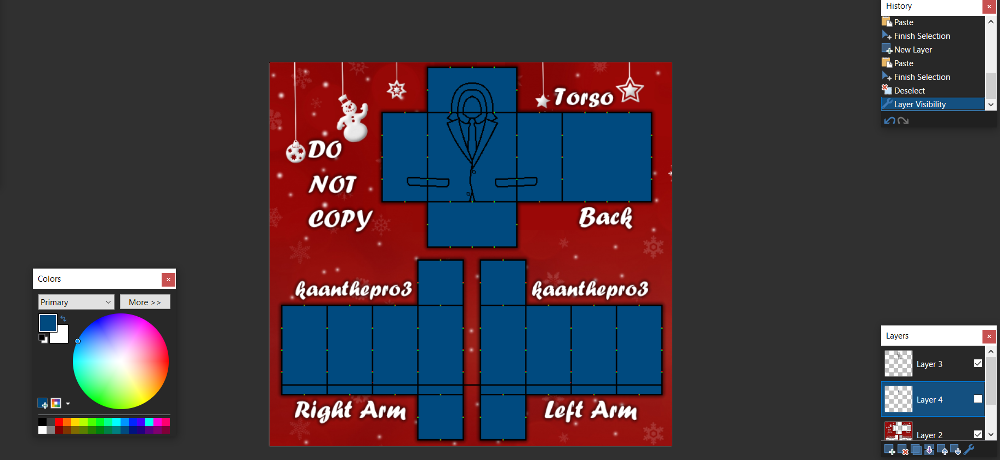
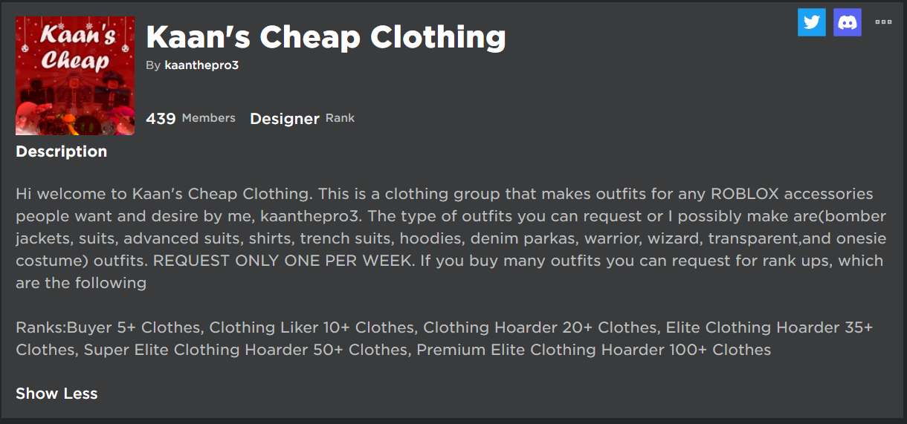
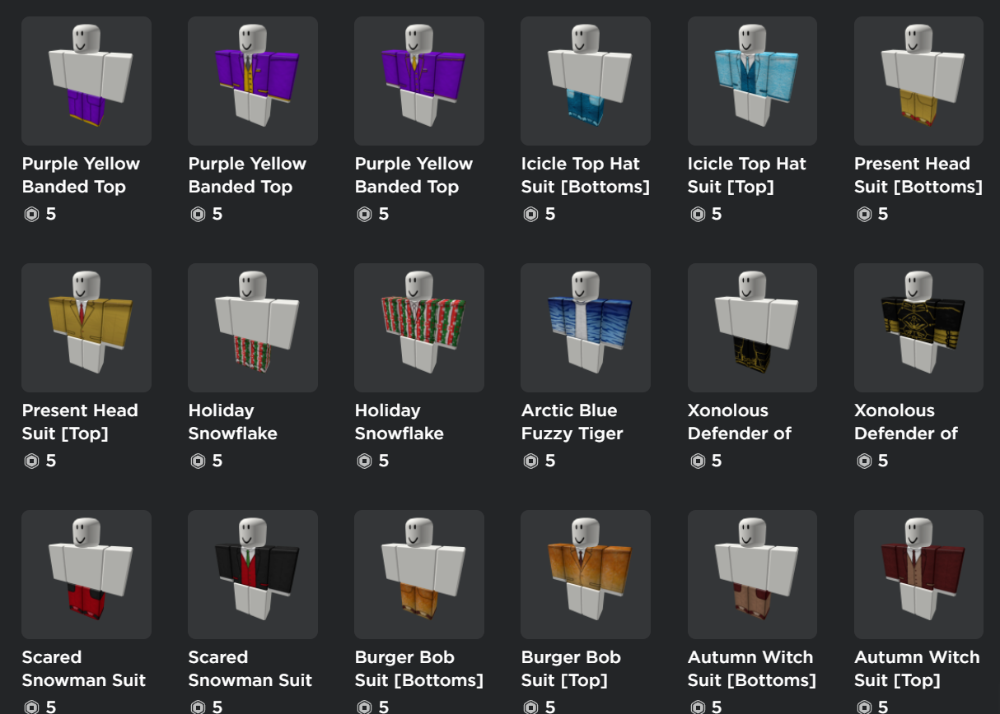
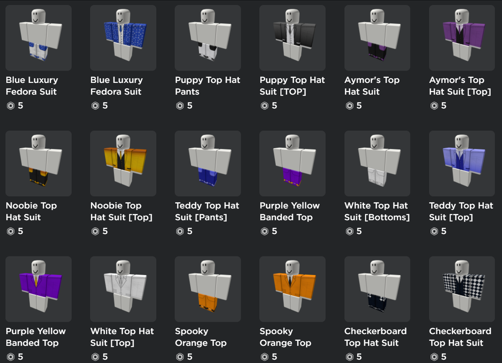
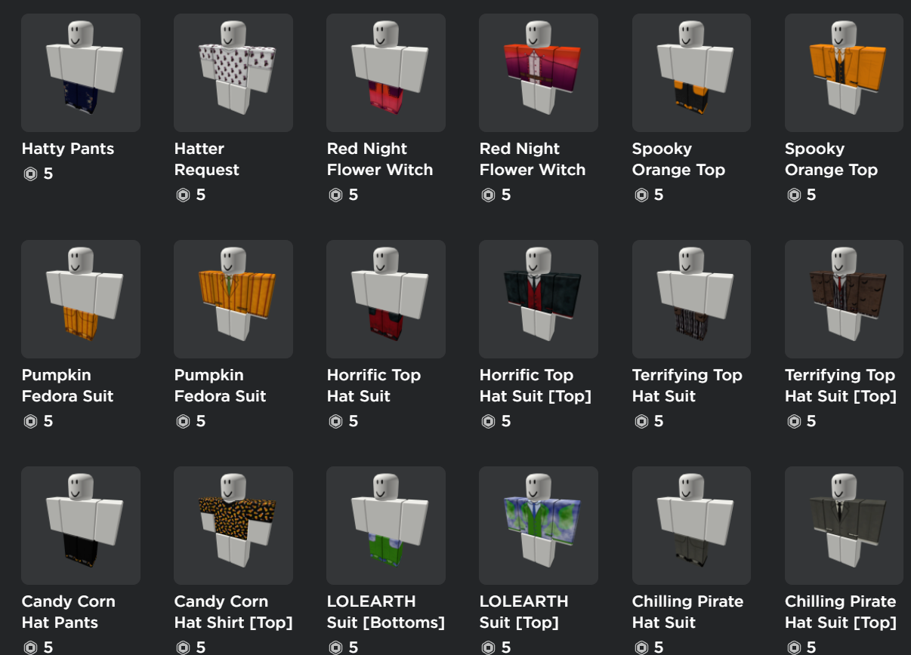

Motivation to the Group
When I was 12, I had a huge obsession with the game Roblox. I always loved buying in-game perks and items for my avatar. However, those came with a huge price, and I always hated asking my parents for money, so I started searching for methods on how to make Robux. Consequently, I decided to watch many Youtube videos explaining the basics of the Roblox economy and how to make money fast. I learned the 3 main things for making money from Roblox are designing clothing, game development, GFX commissions, and selling Roblox limiteds. Since I decided on clothing, I looked at the catalog and tried to figure out fashion trends. I have noticed that there was a lot of off-brand clothing mimicking real-world brands, but there was a bare amount of clothing to match accessories, so on April 1, 2019, I created my first Roblox group, Kaan’s Cheap Clothing, at an investment price of 100 Robux.
Design Process
Clothing
Each piece of clothing is made using a template. The template converts the 3D shape of the cube torso, arms, and legs into the surface area of the volumes. For instance, the torso would have 6 faces unwrapped because a cube has 6 faces. Each design I make follows the 3 principles: texture, overlay, color, shade, and blending. First comes texturing, the goal of texturing is to add as much primary color to fill the surfaces of the grids as much as possible. Next comes, suit overlay, the goal is to find a proper transparent texture over the primary color. For example, a suit overlay, hoodie overlay, jacket overlay, t-shirt overlay, etc. Next comes color; I follow a specific rule known as the 60-30-10 rule which is pretty simple. Basically, each design I make has a color palette in mind. The color I use the most is the primary color(fills 60% of the template), the color I use the second most is the secondary color(fills 30% of the template), and the color I use the least is the complementary color(fills 10% of the template). Then comes shading, which is pretty much overlay, but I put on some sort of fabric stretching overlay. Finally comes blending, in which I try to find the most appropriate mix blend for my design. Some examples of blend types are overlay, darken, lighten, x-ray, etc.
Overlays
To make my overlays, I use a 3-step process: inspiration, outline, and color. For inspiration, I usually go on Pinterest or Google and search for the type of clothing I want to make. Next, I open up my image editing software and outline what I want the torso to look like. At the front face of the torso is usually where I draw the outline of the suit and then I just guess logically where the other elements would line up. Finally, I would add some color to the interiors of the outline where I think I need it most, and then some drop-shadow.




The Rise
After studying clothing design and looking at other designer templates, I have created my first piece of clothing on April 10, 2019. The clothing I made was a set of shirts and pants to match an accessory called the “Rad I. O’Head”, and just after I few hours, I slowly started to see a trend in sales. For the following weeks after that, I have been consistently putting out clothing for all the newer items that release on the catalog. Consequently, I was slowly starting to get my name out in the Roblox designing industry and building a community alongside it. The smile in my face was so pure when I started to see people admire my clothing in the comments or in the group wall. I felt like I have truly achieved something special.
My Community
After passing over 200 members in my Roblox group, I decided to run a Discord channel for my members just to strengthen communication and build establishing relationships with my followers. One main event I do with my followers is a “Clothing Extravaganza”, where people would compete in the group walls and the discord threads to recommend their ideal outfit recommendation for a certain hate, and I would make the first five the following week that comment. For instance, a person would say “Suit for Blue Top Hat”, and I would try to make the actual suit design for the top hat. I remember making that request and seeing how happy the client was, saying “This is unreal.” However, consistency lead to burn-out and that started leading to the lack of motivation for me to continue designing.
The Fall of Motivation
Many times when I upload clothing to the catalog, within 1-3 days, someone steals my clothing and sells it as their own product. Roblox continuously been having this problem and to this day there is still no solution, due to how easy it is to find someone’s template and upload it yourself on the Creator Page. For instance, one of my best-selling outfits, “Cartoony Rainbow", which has been currently taken down due to false copyright claims, has gotten over 50,000 sales. However, the next time I searched up that outfit. there were many copies and bots reselling my item as their own and taking me off the front page due to spam. This happened to almost every single one of my clothing and losing a huge opportunity like this was Strike 1 for me. In addition, before the end of September 2020, Roblox made it so anyone can upload clothing to the catalog and you didn't need to have a premium account. Consequently, more copiers have started coming into the platform, and instead of having my clothing copied every 3-4 days, my clothing gets copied every single day. Furthermore, later down the line, Roblox started adding fees to upload clothing, one shirt and pants would cost 10 robux. Although this fee would result in attacking copiers, I now have to pay extra to get my clothing on the catalog. Consequently, I slowly quit the platform.
Accomplishments
Despite the many drawbacks, I argue that within the time I was designing, I achieved so much. To this day, I have sold over 100000 units of outfits and have dominated 2.5% of the Roblox accessory clothing catalog. Additionally, I have made over 1 million robux during my career in clothing designing($3500 equivalent if I exchanged that to real money). Furthermore, although I am away from the designing chair, I still make around 2700 robux a week($7), which is surprising to me.
Reflection
Overall, designing was meant to be a hobby, but then almost turned into a side career. I have developed so many skills such as time management, texturing, editing, and personal branding. To conclude, if you focus and commit to one of your dreams or hobbies, you can eventually make a career out of it. That is what I am currently doing with game development, in an attempt to learn enough from personal projects and make a career out of it.
Roblox Group



